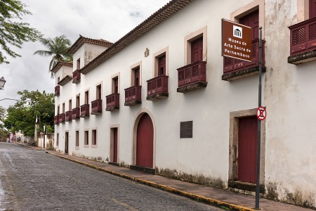

 Opened on April 11, 1977, the Museum of Sacred Art of Pernambuco (Msape) was one of the first buildings in the village of Olinda. In 1676, when Olinda became a city, the building served as an episcopal palace for its first bishop, Dom Estevão Brioso de Figueiredo.The former Episcopal Palace of Olinda, which belonged to the Archdioceseof Olinda and Recife, underwent several adaptations during the 18th century and 19th century. It was used as a collective residence for barracks religious, college and army during the Second World War. On its façade, we can see the old episcopal coat of arms and a plaque of Unesco dated 14 December 1982, which declares Olinda to be a city on the UNESCO World Heritage List